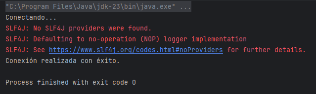
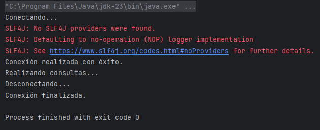

Para conectar un proyecto Java con MySQL/MariaDB, deberemos añadir al archivo pom.xml la dependencia para que se infiera el JDBC.
<dependency>
<groupId>org.mariadb.jdbc</groupId>
<artifactId>mariadb-java-client</artifactId>
<version>3.3.2</version>
</dependency>Crearemos un nuevo proyecto Java Maven y se la añadimos:
<?xml version="1.0" encoding="UTF-8"?>
<project xmlns="http://maven.apache.org/POM/4.0.0"
xmlns:xsi="http://www.w3.org/2001/XMLSchema-instance"
xsi:schemaLocation="http://maven.apache.org/POM/4.0.0 http://maven.apache.org/xsd/maven-4.0.0.xsd">
<modelVersion>4.0.0</modelVersion>
<groupId>org.example</groupId>
<artifactId>bases_datos_mariadb</artifactId>
<version>1.0-SNAPSHOT</version>
<properties>
<maven.compiler.source>23</maven.compiler.source>
<maven.compiler.target>23</maven.compiler.target>
<project.build.sourceEncoding>UTF-8</project.build.sourceEncoding>
</properties>
<dependencies>
<dependency>
<groupId>org.mariadb.jdbc</groupId>
<artifactId>mariadb-java-client</artifactId>
<version>3.3.2</version>
</dependency>
</dependencies>
</project>--> Recuerda actualizar las dependencias Maven para que vuelva a cargar todos los cambios desde el pom.xml.
Para probar que funciona, vamos a la clase Main y creamos un nuevo método de tipo Connection para conectarnos a la BD llamado conexion():
public class Main {
public static void main(String[] args) {
Connection bd = conexion();
}
public static Connection conexion() {
Connection conexion;
String host = "jdbc:mariadb://localhost:3307/";
String user = "root";
String psw = "";
String bd = "prueba";
System.out.println("Conectando...");
try {
conexion = DriverManager.getConnection(host+bd,user,psw);
System.out.println("Conexión realizada con éxito.");
} catch (SQLException e) {
System.out.println(e.getMessage());
throw new RuntimeException(e);
}
return conexion;
}
}
Esto que ves:
SLF4J: No SLF4J providers were found.
SLF4J: Defaulting to no-operation (NOP) logger implementation
no es un error crítico. Es sólo una advertencia, porque el conector MariaDB puede usar SLF4J para logs si queremos, pero si no lo instalamos, simplemente no loguea mensajes. No afecta a la conexión ni al funcionamiento de la aplicación.
Cerrar conexión
No debemos dejar conexiones abiertas, por lo que es una buena práctica tener otro método para cerrar la conexión cuando finalizamos el programa. Vamos a declarar otro método desconectar():
public class Main {
public static void main(String[] args) {
Connection bd = conexion();
System.out.println("Realizando consultas...");
desconectar(bd);
}
public static Connection conexion() {
Connection conexion;
String host = "jdbc:mariadb://localhost:3307/";
String user = "root";
String psw = "";
String bd = "prueba";
System.out.println("Conectando...");
try {
conexion = DriverManager.getConnection(host+bd,user,psw);
System.out.println("Conexión realizada con éxito.");
} catch (SQLException e) {
System.out.println(e.getMessage());
throw new RuntimeException(e);
}
return conexion;
}
public static void desconectar(Connection conexion){
System.out.println("Desconectando...");
try {
conexion.close();
System.out.println("Conexión finalizada.");
} catch (SQLException e) {
System.out.println(e.getMessage());
throw new RuntimeException(e);
}
}
}